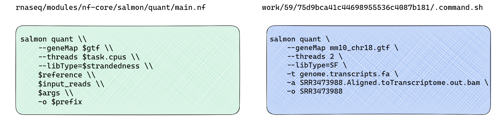

Using a parameter file
- Write a parameter file
- Understand the YAML file format
- Rerun the workflow using a params file
- Understand the use of the params file for reproducible and transparent research
In Nextflow, parameters are values that can be set by the user and used to control the behaviour of a workflow or process within the workflow. Parameters are used in nf-core workflows to specify input and output files and define other aspects of workflow execution. Each nf-core workflow comes with a default set of parameters that can be customised to suit specific requirements. In the previous lesson we supplied these parameters in our run command, on the command line. Specifying multiple parameters like this can be messy and hard to keep track of.
Nextflow allows us to pass all parameters to a workflow’s run command using the -params-file flag and a JSON or YAML file. Using a parameter file makes it easier to rerun and reproduce our code, we can also share these files with our collaborators and provide as supplementary file in a publication. In this lesson we’re going to adjust our run command and rerun the workflow using a parameter file, rather than specifying all parameters on the command line.
Revising the run command
While our workflow completed successfully, all fastq files failed the strandedness check:
-[nf-core/rnaseq] Pipeline completed successfully with skipped sampl(es)-
-[nf-core/rnaseq] Please check MultiQC report: 6/6 samples failed strandedness check.-
Completed at: 12-Apr-2023 04:13:09
Duration : 16m 18s
CPU hours : 0.4
Succeeded : 200Let’s take a look at the MultiQC report, as directed. You can find this report in the results/ directory:
ls -la Exercise1/multiqc/star_salmontotal 1468
drwxrwxr-x 4 ubuntu ubuntu 4096 Apr 12 04:13 .
drwxrwxr-x 3 ubuntu ubuntu 4096 Apr 12 04:13 ..
drwxrwxr-x 2 ubuntu ubuntu 4096 Apr 12 04:13 multiqc_data
drwxrwxr-x 5 ubuntu ubuntu 4096 Apr 12 04:13 multiqc_plots
-rw-rw-r-- 1 ubuntu ubuntu 1483297 Apr 12 04:13 multiqc_report.htmlOpen the multiqc_report.html the file navigator panel on the left side of your VS code window by clicking on it. Then open the rendered html file using the Live Server extension:
Ctrl+Shift+Pto open the command palette- Select
Live Server: Open with Live Serverto open html file in your browser window.
Take a look a the section labelled WARNING: Fail Strand Check

The issue here is provided strandedness that we specified in our samplesheet.csv and inferred strandedness do not match. Look’s like we’ve incorrectly specified strandedness as forward, when our reads show an equal distribution of sense and antisense reads. Given our previous experience with using Salmon to perform transcript quantification, we know it has an option to automatically detect the library type from the data, rather than infer it from the strandedness metadata we provided. Let’s check how the nf-core/rnaseq workflow ran the Salmon quantification process.
How can we know what tool flags are applied by default?
To understand what command is being run for a process, you can attempt to infer this information from a process main.nf script in the modules/ directory. However, given all the different parameters that may be applied, this may not be straight forward. To understand what Salmon is doing, we’re going to use the nextflow log command and some custom bash code to track down the hidden .command.sh scripts for each Salmon quant process to find out how Salmon quant identified library type.
Use the Nextflow log command to reveal information about executed pipelines in our working directory:
nextflow logThis will print a list of executed pipelines, by default:
TIMESTAMP DURATION RUN NAME STATUS REVISION ID SESSION ID COMMAND
2023-04-12 03:56:51 16m 19s irreverent_allen OK f421ddc35d 93c2078a-15b0-4882-a9b1-ac7435bdcc57nextflow run rnaseq/main.nf --input /home/ubuntu/session2/materials/samplesheet.csv -profile singularity --fasta /home/ubuntu/session2/materials/mm10_reference/mm10_chr18.fa --gtf /home/ubuntu/session2/materials/mm10_reference/mm10_chr18.gtf --star_index /home/ubuntu/session2/materials/mm10_reference/STAR --max_memory '6 GB' --max_cpus 2 --outdir Exercise1All recent runs will be listed, with the most recent last (i.e. closest to your returned command prompt). Let’s query the logs for the previous lesson run. Run the command below after filling in your unique run name. For example:
nextflow log irreverent_allenThat command listed out all the work sub-directories for all processes run. Recall that the actual tool commands issued by the nexflow processes are all recorded in hidden script files called .command.sh within the execution process directory. One way of observing the actual run commands issued by the workflow is to view these comamnd scripts. But how to find them?! Let’s add some custom bash code to query a Nextflow run with the run name from the previous lesson.
First, save your run name in a bash variable:
run_name=<ENTER_YOUR_RUN_NAME>And let’s save the tool of interest (salmon) in another bash variable:
tool=salmonNext, run the following bash command:
nextflow log ${run_name} | while read line;
do
cmd=$(ls ${line}/.command.sh 2>/dev/null);
if grep -q $tool $cmd;
then
echo $cmd;
fi;
done That will list all process .command.sh scripts containing ‘salmon’. There are multiple salmon steps in the workflow, inlcuding index and an R script. We are looking for salmon quant which performs the read quantification.
/home/ubuntu/session2/work/50/d4462ece237213ace901a779a45286/.command.sh
/home/ubuntu/session2/work/2f/11774c859f9f55f816b754a65290a7/.command.sh
/home/ubuntu/session2/work/bc/0478d8de4d1c6df1413c50f4bffcb1/.command.sh
/home/ubuntu/session2/work/af/57d1741b614927225fe6381333d615/.command.sh
/home/ubuntu/session2/work/e6/6a644b0d85f03ec91cd2efe5a485d2/.command.sh
/home/ubuntu/session2/work/7d/ff697b987403d2f085b8b538260b67/.command.sh
/home/ubuntu/session2/work/3e/1b7b0f03c7c7c462a4593f77be544e/.command.sh
/home/ubuntu/session2/work/31/5e6865dbbbb164a87d2254b68670fa/.command.sh
/home/ubuntu/session2/work/79/93034bd48f5a0de82e79a1fd12f6ac/.command.sh
/home/ubuntu/session2/work/ca/bbfba0ea604d479bdc4870e9b3b4ce/.command.sh
/home/ubuntu/session2/work/ec/0a013bfb1f96d3c7170137262294e7/.command.sh
/home/ubuntu/session2/work/b7/37428bc5be1fd2c34e3911fb827334/.command.sh
/home/ubuntu/session2/work/57/a18fcea6a06565b14140ab06a3d077/.command.shCompare the salmon quant command with the command run in the Salmon quant process script block:
cat rnaseq/modules/nf-core/salmon/quant/main.nfCompared with the salmon quant main.nf file, we get more information from the .command.sh process scripts:

Looking at the nf-core/rnaseq documentation, we can see library type is automatically inferred based on provided strandedness and this can be overridden using Salmon’s --libType=$strandedness flag. Following the recommendations in the Salmon documentation, we’re going to override this default with the nf-core/rnaseq workflow’s --salmon_quant_libtype A parameter.
Salmon is a tool for transcript quantification using RNA-seq data. Library type is important for transcript quantification as it determines how reads are aligned to the reference transcriptome, how expression levels are estimated. Salmon can accurately determine library type based on alignment files. To avoid potential input errors in future runs, we’ll allow Salmon to automatically detect the library type. You can read more about how Salmon performs library detection here.
Writing a parameter file
Nextflow accepts either YAML or JSON formats for parameter files. YAML and JSON are formats for storing data objects and structures in a file and either is a valid choice for building your parameters file. We will create and apply a YAML file with our inputs for our second run, just because its easier to read. YAML files use a .yml and .yaml extension and follow these syntax rules:
- Uses 3 dashes (---) to indicate the start of a document and 3 dots (…) to indicate the end
- Uses an indentation heirarchy like Python to show a heirarchy in the data
- Key/value pairs are separated by a colon (:)
- Lists begin with a hyphen
- Each key and value must be unique
- The order of keys or values in a list doesn’t matter
Using the syntax rules above:
- Write a YAML file for the parameters run command that can be run by a collaborator working on a different computational infrastructure but the same input and reference files.
- Add a key for the
--salmon_quant_libtype Aflag, we have added to the workflow.
nextflow run rnaseq/main.nf \
--input $materials/samplesheet.csv \
-profile singularity \
--fasta $materials/mm10_reference/mm10_chr18.fa \
--gtf $materials/mm10_reference/mm10_chr18.gtf \
--star_index $materials/mm10_reference/STAR \
--max_memory '6 GB' \
--max_cpus 2
--outdir Exercise1Save this file as params.yaml:
# experiment: WT vs KO mouse model
# workflow: nf-core/rnaseq/3.11.1
---
input: "/home/ubuntu/session2/materials/samplesheet.csv"
outdir: "Exercise2"
gtf: "/home/ubuntu/session2/materials/mm10_reference/mm10_chr18.gtf"
fasta: "/home/ubuntu/session2/materials/mm10_reference/mm10_chr18.fa"
star_index: "/home/ubuntu/session2/materials/mm10_reference/STAR"
salmon_quant_libtype : A
...Any of the workflow parameters can be added to the parameters file in this way.
Passing an input parameter file
Once your params file has been saved, run the following, observing how the command is now shorter thanks to offloading some parameters to the params file. Note the use of a single - for ‘resume’ and ‘params-file’ as these are Nextflow flags and not nf-core parmeters. Nextflow can use cached output! If we apply the -resume flag to the run, Nextflow will only compute what has not been changed. Rerun the workflow:
nextflow run rnaseq/main.nf \
--max_memory 6.GB \
--max_cpus 2 \
-profile singularity \
-resume \
-params-file params.yaml \
--outdir Exercise2 As we’ve used the -resume flag, the initial pre-processing stage and STAR alignments should to be restored from cache and the Salmon and downstream QC steps will be recomputed. The rerun workflow should complete in ~ minutes
-[nf-core/rnaseq] Pipeline completed successfully with skipped sampl(es)-
-[nf-core/rnaseq] Please check MultiQC report: 6/6 samples failed strandedness check.-
Completed at: 12-Apr-2023 04:29:39
Duration : 2m 5s
CPU hours : 0.4 (85% cached)
Succeeded : 15
Cached : 185- A parameter file can be used to specify input parameters for any Nextflow workflow.
- Specify parameter files in a workflow run command using the
-params-fileflag. - Parameter files can be written in YAML or JSON file formats.
All materials copyright Sydney Informatics Hub, University of Sydney